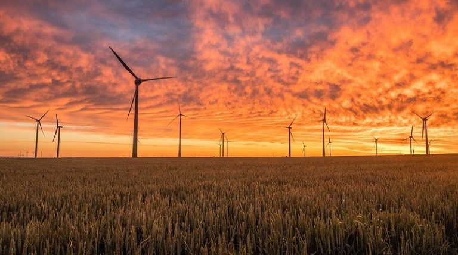

Energia Sustentável Hispânica
A ODS 7 trata do acesso às diferentes fontes de energia, principalmente às renováveis, eficientes e não poluentes. A preocupação mundial com a energia segura e com a preservação ambiental culminou, em 2002, com a criação da unidade de Energia da Organização das Nações Unidas (ONU) voltada para a temática. Trata-se de um ODS que interliga diferentes níveis de poder: a energia é fundamental para a vida cotidiana, mas também para a produção industrial global. Com isso, os interessados no assunto são muitos e variados: vão desde as famílias que moram no campo até os municípios urbanos, chegando a Estados nacionais. A energia é um campo de disputa internacional, principalmente quanto ao uso de fontes renováveis e não poluentes, que tem reflexo direto na economia.
Além disso, a energia solar é uma energia disponível em praticamente todo o planeta, o que ajuda a reduzir as importações de energia e criar riqueza e emprego localmente. Por esses motivos, a produção de eletricidade solar e seu uso eficiente contribuem para o desenvolvimento sustentável. As alterações climáticas e a poluição ambiental têm suscitado uma maior preocupação em encontrar fontes de energia que sejam eficientes e que também estejam em harmonia com a natureza.
.jpeg)
Entre as principais fontes estão a hidrelétrica, geotérmica das marés, eólica e solar fotovoltaica. Todas essas fontes de energia representam opções que nos permitem produzir eletricidade em equilíbrio com o meio ambiente, por isso novos avanços estão sendo desenvolvidos a cada dia para tornar essas fontes mais acessíveis e eficientes. No entanto, não podemos deixar de referir que a energia solar conseguiu se posicionar como uma das mais utilizadas a nível mundial, por ser um tipo de energia mais versátil.